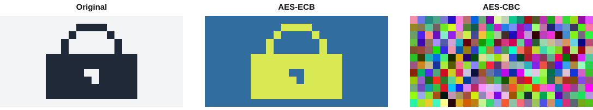

Criptografia simétrica: DES, RC5 e AES. Qual usar no SecureDocs?
Aluno 1Aluno 2Aluno 3Aluno 4Aluno 5
Equipe de Especialistas em Segurança e CriptografiaOutubro de 2026
Roteiro da apresentação (10 minutos)
Quem
Tempo
Slides
Conteúdo
Aluno 1
0:00 – 2:00
1 – 4
O incidente, por que as cifras clássicas falharam, fundamentos e modos de operação
Aluno 2
2:00 – 4:00
5 – 6
DES: estrutura de Feistel e o nosso ataque de força bruta
Aluno 3
4:00 – 6:00
7 – 8
RC5: rotações dependentes dos dados, fraquezas e desempenho comparado
Aluno 4
6:00 – 8:00
9 – 11
AES, a biblioteca securedocs_crypto e o experimento com arquivo
Aluno 5
8:00 – 10:00
12 – 14
Comparativo, escolha do algoritmo, distribuição de chaves e conclusão
Produtos da missão: resumo escrito + biblioteca Python (DES, RC5, AES, 18 testes) + esta apresentação.
SecureDocs · Missão 32
O incidente: os arquivos foram copiados
Aluno 1 · 0:00–2:00
Um invasor copiou arquivos do servidor do SecureDocs, cifrados com cifras clássicas (César, Vigenère, transposição).
Espaço de chaves minúsculo: a cifra de César tem só 25 chaves, que se testam em milissegundos.
Estatística preservada: a letra mais frequente do cifrado provavelmente é o “A” ou o “E”, e a análise de frequência revela o texto.
Padrões repetidos denunciam o tamanho da chave (Kasiski) no Vigenère.
“Mesmo que um invasor consiga copiar nossos arquivos, como impedir que ele conheça seus conteúdos?” Diretoria da TechSecure
Nossa resposta
Cifrar todos os documentos em repouso com uma cifra simétrica moderna, com chave grande e resistente à criptoanálise. Assim, o arquivo roubado vira ruído inútil para o invasor.
SecureDocs · Missão 33
Criptografia simétrica e modos de operação
Aluno 1 · 0:00–2:00
C = EK(P) P = DK(C)
A mesma chave cifra e decifra.
Cifra de bloco: blocos fixos de 64 ou 128 bits.
Confusão (S-boxes) + difusão (permutações): 1 bit alterado muda cerca de 50% da saída.
Modo de operação para arquivos grandes: ECB, CBC, CTR, GCM.

Saída real de demo_ecb_vs_cbc.py (288 blocos, AES). No ECB, blocos iguais geram cifrados iguais e o cadeado continua visível (2 blocos distintos). No CBC, com IV aleatório, os 288 blocos são distintos.
Lição: um algoritmo forte em um modo errado ainda vaza informação.
SecureDocs · Missão 34
DES: Data Encryption Standard (1977)
Aluno 2 · 2:00–4:00
Bloco de 64 bits; chave de 64 bits, mas só 56 efetivos.
16 rodadas de Feistel: Li = Ri−1; Ri = Li−1 ⊕ f(Ri−1, Ki).
Função f: expansão E (32 → 48), XOR com a subchave, 8 S-boxes (6 → 4 bits, a única parte não linear) e permutação P.
Subchaves: PC-1 (56 bits), rotações de 1 ou 2 bits, PC-2 (48 bits).
Decifrar = mesmo circuito com as subchaves invertidas.
Na nossa implementação (des.py), uma única função _permutar() aplica todas as tabelas do FIPS 46-3. Também implementamos o 3DES-EDE.
SecureDocs · Missão 35
Atacamos o DES: força bruta na prática
Aluno 2 · 2:00–4:00
$ python exemplos/ataque_forca_bruta_des.py
Texto conhecido : b'CONTRATO'
Bits procurados : 14 (16,384 chaves)
Chave encontrada: 133457799BBCBC6E
Chaves testadas : 12,088 em 3.16 s
3,823 chaves/s
Todo contrato começa com “CONTRATO”: esse texto conhecido basta para testar chaves.
Tempo médio para achar a chave completa:
Atacante
DES 256
AES-128
AES-256
Nosso notebook
3·105 anos
1027 anos
1065 anos
Deep Crack (1998)
4,6 dias
1019 anos
1058 anos
Cluster de GPUs
10 horas
1018 anos
1057 anos
Histórico: o DES foi quebrado em 56 h (EFF, 1998) e em 22 h (1999). O 3DES (112 bits) é 3× mais lento, tem bloco de 64 bits (ataque Sweet32) e foi proibido pelo NIST para novos dados desde 2024.
SecureDocs · Missão 36
RC5: simples e parametrizável (Rivest, 1994)
Aluno 3 · 4:00–6:00
RC5-w/r/b: palavra de w bits (16, 32, 64), r rodadas, chave de b bytes.
Referência: RC5-32/12/16, com bloco de 64 bits e chave de 128 bits.
Só 3 operações: soma, XOR e rotação.
A rotação é dependente dos dados: o próprio texto define quantas posições girar, sem S-boxes.
Expansão de chave: tabela S iniciada com as constantes P = Odd((e−2)·2w) e Q = Odd((φ−1)·2w) e misturada com a chave em 3·max(t, c) passos.
# cifragem (rc5.py)
A = A + S[0]
B = B + S[1]
for i in 1..r:
A = ((A ^ B) <<< B) + S[2i]
B = ((B ^ A) <<< A) + S[2i+1]
# decifragem: tudo ao contrário
B = ((B - S[2i+1]) >>> A) ^ A
A = ((A - S[2i]) >>> B) ^ B
Nossa classe aceita w = 16, 32 ou 64 e qualquer número de rodadas. Ela foi validada com os vetores originais de Rivest (ex.: chave 0 → 21A5DBEE154B8F6D).
SecureDocs · Missão 37
RC5: pontos fortes, fracos e desempenho medido
Aluno 3 · 4:00–6:00
Pontos fortes
Código curto e rápido em software
Chave de até 2040 bits
Pontos fracos
Com 12 rodadas, cai em ataque diferencial com 244 textos escolhidos
Bloco de 64 bits (mesmo limite do DES)
Não é padrão NIST e não tem aceleração em hardware
Vazão de cifragem, modo CBC(KB/s, Python puro, 32 KB)
Saída de comparativo_desempenho.py
RC5-32/12/16
705AES-128
316AES-256
267DES
473DES
15
O RC5 é o mais rápido em Python puro. Em processadores reais, as instruções AES-NI cifram AES a vários GB/s.
SecureDocs · Missão 38
AES: Advanced Encryption Standard (FIPS 197, 2001)
Aluno 4 · 6:00–8:00
Bloco de 128 bits organizado como uma matriz 4×4 de bytes (o estado). Chaves de 128, 192 ou 256 bits → 10, 12 ou 14 rodadas. Rede de substituição-permutação sobre o corpo GF(28).
1 · SubBytes
Cada byte passa pela S-box: inverso em GF(28) + transformação afim. Gera a confusão.
2 · ShiftRows
A linha r gira r posições, misturando as colunas.
3 · MixColumns
Cada coluna é multiplicada pela matriz [02 03 01 01] em GF(28). Gera a difusão.
4 · AddRoundKey
XOR com a chave da rodada, gerada por RotWord, SubWord e Rcon.
Na nossa implementação (aes.py), a S-box não foi copiada de uma tabela: ela é calculada no código, a partir do inverso a254 e da transformação afim.
Melhor ataque: biclique, que reduz o AES-128 de 2128 para 2126,1 (sem efeito prático). Com o algoritmo quântico de Grover, o AES-256 ainda mantém 2128.
SecureDocs · Missão 39
Biblioteca securedocs_crypto (Python puro)
Aluno 4 · 6:00–8:00
securedocs_crypto/
des.py DES + 3DES
rc5.py RC5-w/r/b
aes.py AES-128/192/256
modos.py ECB, CBC, CTR, PKCS#7
arquivo.py AES-256 + HMAC + PBKDF2
tests/test_vetores.py 18 testes
exemplos/ 4 demonstrações$ python -m unittest discover -s tests
Ran 18 tests in 1.508s
OK
Validada com vetores oficiais:
Algoritmo
Fonte
Resultado
DES
FIPS 46 / SP 800-17
85E81354… ✓
RC5-32/12/16
Rivest 1994 (3 vetores)
21A5DBEE… ✓
AES-128/192/256
FIPS 197, ap. C
69C4E0D8… ✓
AES-CBC / CTR
NIST SP 800-38A
7649ABAC… ✓
cifra = AES(chave_32_bytes)
iv, c = cbc_encrypt(cifra, dados)
cbc_decrypt(cifra, iv, c) == dados # True
SecureDocs · Missão 310
Experimento: arquivo cifrado e recuperado com AES
Aluno 4 · 6:00–8:00
contrato.txt 681 B · legível
→
AES-256
→
contrato.txt.sdoc 3b 69 74 d0 75 59…
→
AES-256
→
contrato_recuperado.txt 681 B · idêntico
SHA-256 original : 2a2a67bd95b088a2a1e2280e9cfa3269bb6dc2f5620c708dce8dc0cb95bfd8a0
SHA-256 recuperado : 2a2a67bd95b088a2a1e2280e9cfa3269bb6dc2f5620c708dce8dc0cb95bfd8a0 IDÊNTICO
Entropia: 5.12 → 7.68 bits/byte Contém 'R$ 1.250.000' no cifrado? NÃO
Invasor altera 1 bit do arquivo cifrado → RECUSADO: falha de integridade (HMAC)
Invasor tenta outra senha → RECUSADO
Formato:SDOC | versão | salt | IV | cifrado AES-256-CBC | HMAC-SHA256. A chave vem da senha via PBKDF2 (200 mil iterações). O HMAC também resolve o caso do contrato adulterado.
SecureDocs · Missão 311
Comparativo e decisão: AES-256
Aluno 5 · 8:00–10:00
Critério
DES
RC5
AES
Estrutura
Feistel, 16 rodadas
Feistel, r rodadas
SPN, 10/12/14
Bloco
64 bits
64 bits (w=32)
128 bits
Chave
56 bits
até 2040 bits
128/192/256
Melhor ataque
força bruta em horas
diferencial 244
2126 (teórico)
Era quântica
228
264
2128 (AES-256)
Hardware
obsoleto
não
AES-NI
Situação
retirado em 2005
não padronizado
padrão mundial
Escolha: AES-256
Padrão NIST/ISO, 25 anos sem ataque prático
Bloco de 128 bits
Resiste a Grover (harvest now, decrypt later)
Rápido e com bibliotecas auditadas
Em produção: AES-256-GCM (cifragem autenticada) via biblioteca auditada.
SecureDocs · Missão 312
Nova descoberta: como entregar a chave secreta?
Aluno 5 · 8:00–10:00
Se a chave AES viajar pela Internet, o invasor também a obtém. E 1.200 usuários exigiriam ~720 mil chaves.
Canal alternativo: não escala
KDC (Kerberos): ponto único de falha
Diffie-Hellman: combina o segredo sem enviá-lo, mas precisa de autenticação
Envelope digital: a nossa resposta
Resposta: o AES cifra o documento, e a chave pública do destinatário cifra a chave AES (envelope digital). Certificados (PKI) evitam o man-in-the-middle, e a troca híbrida X25519 + ML-KEM protege contra ataques quânticos.
SecureDocs · Missão 313
Conclusão e próximas missões
Aluno 5 · 8:00–10:00
O que aprendemos
Cifras clássicas e o DES não protegem mais
Tamanho da chave e do bloco é decisivo
O modo de operação importa tanto quanto o algoritmo
O que entregamos
Biblioteca com DES, RC5 e AES, validada por 18 testes
Cifragem de arquivo AES-256 com integridade
Ataque real ao DES
O que falta
Distribuir chaves com segurança
Provar quem enviou cada arquivo
Garantir o não repúdio
Próximas missões: criptografia assimétrica, funções hash e assinatura digital, para completar a arquitetura do SecureDocs com confidencialidade, integridade, autenticidade e não repúdio.